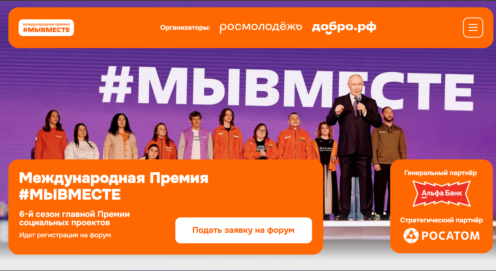
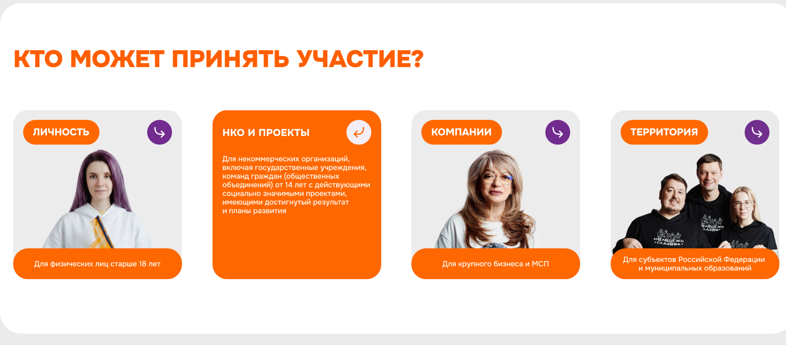
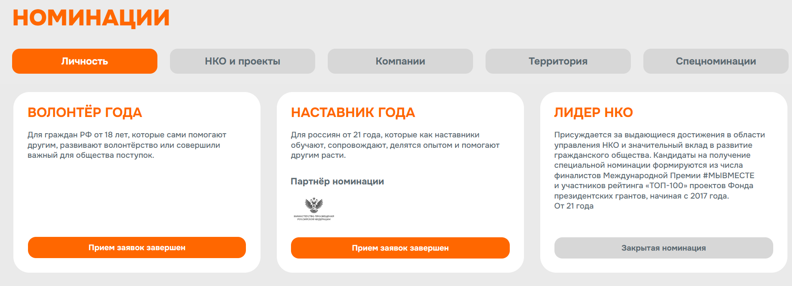

Международная премия #МЫВМЕСТЕ
Дизайн с нуля и сборка сайта премии социальных инициатив для ассоциации «Добро.рф».

Дизайн и сборка на Тильде
Разработала дизайн сайта премии с нуля по брендбуку ассоциации «Добро.рф». Подготовила десктопную и адаптивные версии, собрала блоки на Тильде и дополнила их анимацией и 3D‑интерактивами на коде.
Кто может участвовать
Вынесла четыре категории участников в интерактивные карточки. На лицевой стороне сразу видно, кому подходит категория. При наведении карточка переворачивается и показывает подробные условия на том же месте. Эффект реализовала с помощью кода внутри Тильды.

Номинации по категориям
Реализовала на коде вкладки для пяти групп номинаций. При переключении меняется набор карточек, а в каждой карточке собраны описание и статус приёма заявок. Так посетитель может быстро найти нужную номинацию в своей категории.
